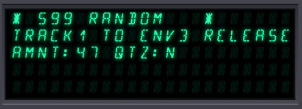
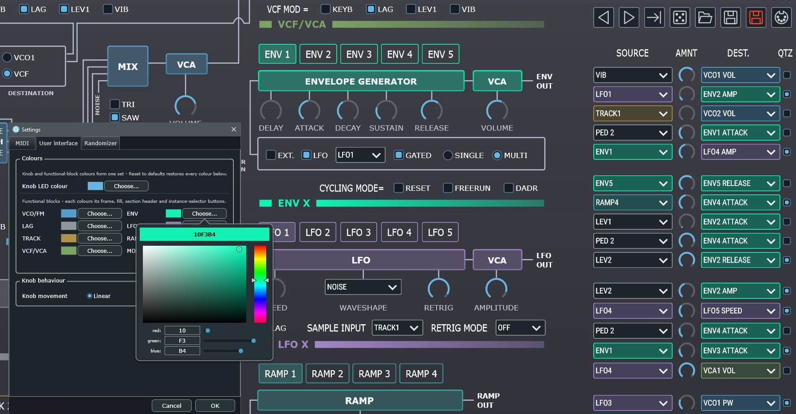
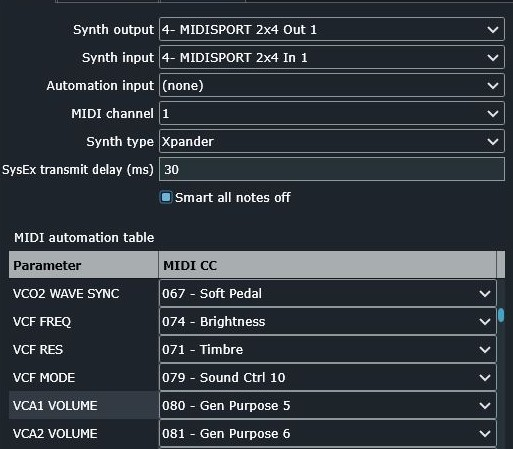

Xplorer® is a real-time, bi-directional editor for the Oberheim Xpander and Matrix-12.
{kind=link}
02 / Overview
Not another generic editor.
Xplorer is not just another generic synthesizer editor with rows of identical sliders that never really tell you what you are doing. It was developed by an Xpander owner, for Xpander and Matrix-12 owners.
With Xplorer you get an immediate overview of every parameter of a single patch, including the full Modulation Matrix — laid out the way the instrument actually works.
Tweak the sound with a mouse, a hardware MIDI controller, your DAW, or directly on the front panel of your Xpander or Matrix-12. Use whichever method you prefer: the display shows you in real time which parameter is being modified.
{kind=link}

“Real-time and bi-directional” means every change you make in Xplorer is written into the synthesizer memory with minimal latency, and vice-versa — no reloading the patch, ever.
{kind=link}
03 / Settings


04 / Capabilities
Main features
-
01 Patch files
Load and save a single patch tone file straight to disk.
-
02 SysEx extraction
Pull individual patches out of an “all data” dump SysEx file.
-
03 Bulk retrieval
Get every single patch from the synthesizer into a folder of your choice.
-
04 Backup & restore
Request, store and restore a complete all-data dump.
-
05 226 parameters
Every parameter of a single patch, editable from one screen.
-
06 MIDI automation
Real-time MIDI automation for all parameters (even filter mode), from a controller or your DAW.
-
07 Copy & paste
Duplicate TRACK, ENV, LFO and RAMP pages in a couple of clicks.
-
08 Patch management
Rename, go to, store and save patches without leaving the editor.
-
09 Two-way tracking
Turn a knob on the synth and every parameter updates on screen in real time.
-
10 Randomizer
Generate new sounds with the built-in patch randomizer.
-
11 Auto-sized UI
The user interface scales itself to fit your display.
-
12 ... and more
More to come in the next releases - stay tuned !
05 / In action
Videos
Oberheim Xpander + Xplorer — sweet electro lead
Firechild — The Last Emperor
06 / Reference
Xpander & Matrix-12
resources
Manuals
Xpander Owner's manual
Xpander Service manual
Matrix-12 Owner's manual
Matrix-12 Preliminary operation guide
Hardware
CEM 3372 VCF datasheet
CEM 3374 VCO datasheet
SIPEX HS3140 / SP7514 DAC
SIPEX HS3140 / SP7514 DAC (alt)
Noritake / Itron ISE FG405A2 VFD Display
Bourns PEC09-2325K-N0015 Encoders
Redshift Consulting
Charts & diagrams


Got an Xpander or a Matrix-12 sitting there? Give it a screen.
Xplorer is free and open source. Download the latest release or browse the source on GitHub.